-
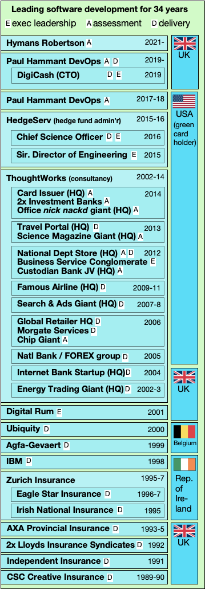
My Employment History
Where I have worked (spans 34 years)
-
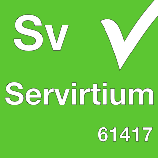
Servirtium
Service Virtualization technology
-
My Consulting Services
Paul Hammant DevOps helps you get to Trunk-Based Development
-
Selenium Co-Creator
Selenium 1's multi-language side is my contribution
-
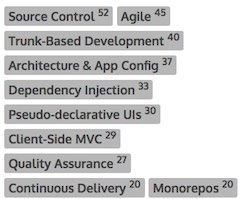
My Blogging
Blog entries on software dev topics
-
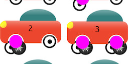
'Branch by Abstraction' Inventor
My contribution to the field of computer science
-
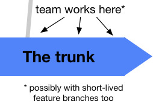
Trunk-Based Development Super Expert
I'm the flag carrier & book writer for this multi-decade practice
-
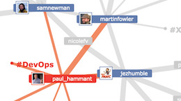
Me On Twitter
Software related tweets (2,600 followers)
-
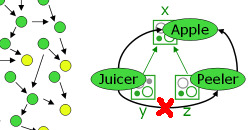
PicoContainer Co-Creator
The first 'constructor injection' DI container
-
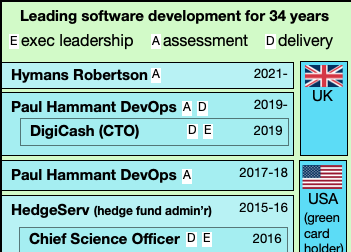
My Employment History
Mostly as a consultant, but always as a leader, I have worked at many blue chip employers and clients over the years in a variety software related roles. Sometimes direct, and sometimes as a consultant though ThoughtWorks (I was there 12.5 years).
Roles have either been:
Delivery: coding and shipping of solutions (architect, developer, test engineer)
Executive: chief of, head of, some group/division/function
Advisory: permanent or contract lean/agile/devops expert
-
Servirtium
An attempt to make a multi-language technology for service virtualization to use in test automation. Also known as wire mocking.
In order of completeness, implementations in JavaScript & TypeScript, .NET, Go, Java, Kotlin, Python, Ruby, Dart (and Flutter), Rust, and Elixir
See Servirtium.dev website.
-
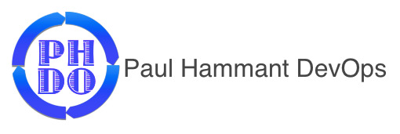
My Consulting Services
I remotely visit companies who want to do software development more effectively, assess them, make a plan with them and help them execute it. In particular this is helping them methodically get to Trunk-Based Development
My ongoing consulting is detailed here: devops.paulhammant.com.
I'm in the UK, so that's a UK Ltd company. Up to 2018, I was in the USA and I did the same through a US Llc.
-
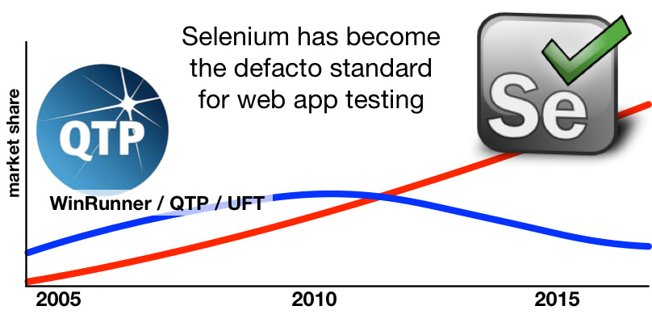
Selenium Co-Creator
Back in 2004 while at ThoughtWorks I made the original Selenium 1 with Jason Huggins and open sourced it. It is now a defacto standard (at version 3), and a multi-million dollar industry. Selenium has its own portal.
In 2014 I wrote ThoughtWorks' "10-year old birthday congratulations for Selenium" [link].
-
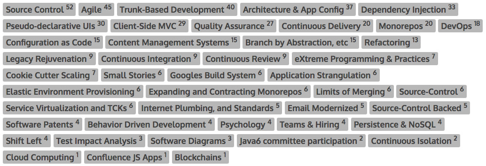
My Blogging
I've blogged continually from 2002 onwards. Always on matters related to software development. I alternate between build-time and run-time concerns. Most often, my style is pundit. I have quite often been early into technologies that would go on to move the industry, and in a few cases been one of the innovators.
-
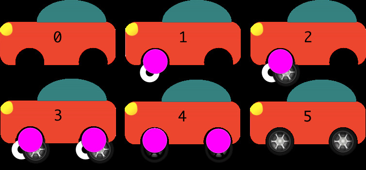
'Branch by Abstraction' Inventor
Branch by Abstraction instead of Branch by Source Control!
See the resource site I put together on it . Well, perhaps I did not invent it as such, but I was the first to document it in 2007.
Industry luminary Martin Fowler wrote an article too and links back to mine. As does Jez Humble with "Make Large Scale Changes Incrementally with Branch By Abstraction".
The pic above is from a page I wrote for the TrunkBasedDevelopment.com website.
-
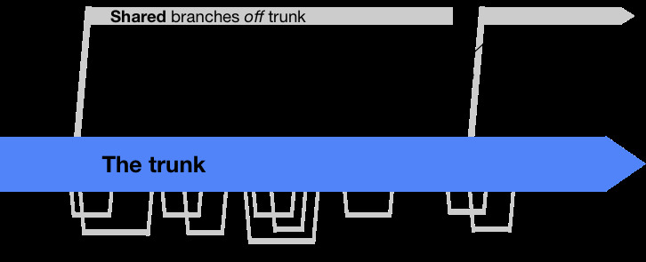
Trunk-Based Development Super Expert
Google do it, and most software development organizations should too. Learn more on the Trunk-Based Development portal that I put together. Also see my book on this topic tbd-book.com
-
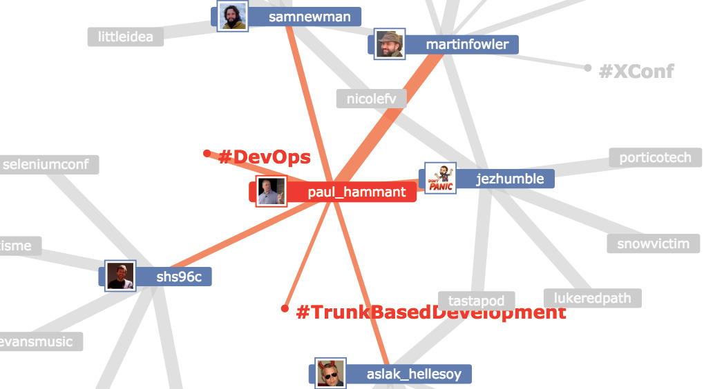
Me On Twitter
I tweet mostly on software technology topics - build, test, agile, lean, architecture Link.
-

PicoContainer Co-Creator
I have been active in Apache's Avalon Framework project from 2000, but in 2003 pivoted with Aslak Hellesøy (more famous for Cucumber these days) towards another take on "Inversion of Control" to use constructors for dependencies, and made PicoContainer (website) for the Java community to use. It is still used today in the industry leading IDEs that JetBrains make.
I am guilty of defining some numerical sub-types for IoC, before ThoughtWorks' chief scientist, Martin Fowler, wrote his widely-read article renaming what I was talking about to Dependency Injection (DI)